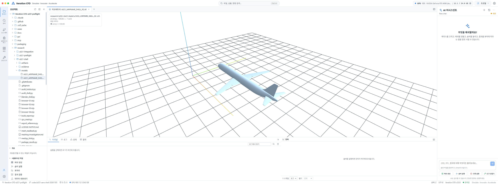
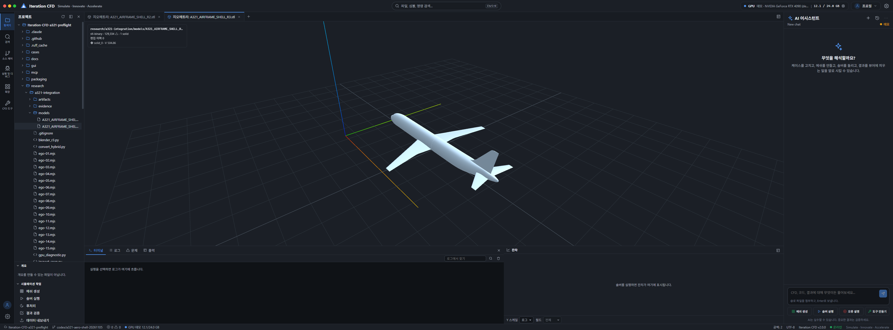
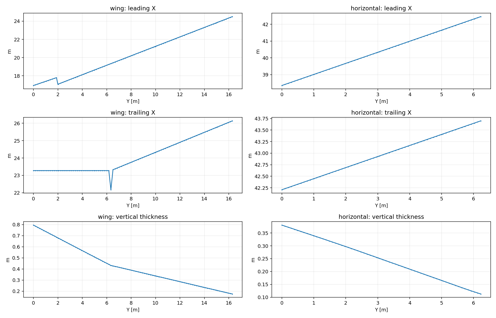
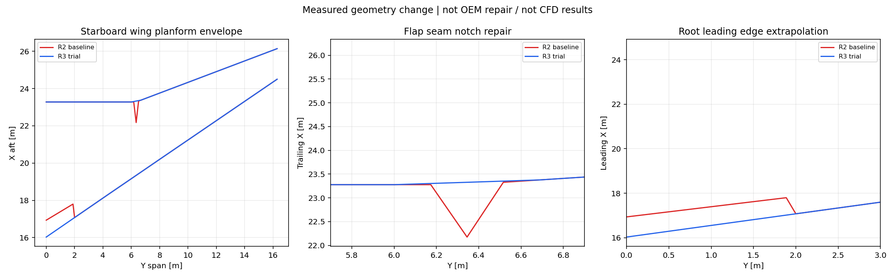

실행 중인 Studio · R3 Blender · R3 STL
2026-11-06. Studio R2/R3 실제 표시 DONE / 날개 홈 수리 후보 R3 DONE / hybrid polyMesh 생성·재읽기 DONE / 격자 품질 FIX_FIRST / 4080 SUPER 제한 VRAM 진단 PASS / 항공기 해석 NOT_RUN.
브랜치 codex/a321-aero-shell-20261105, 시작점 6d4bfed29618a5755898dbb9cd8fcd4d4e62656a. 원본 authored G1B native SHA 1fd3cfd08b1dbf5e5f2fb288caf9846ad149ff8839a37cc2e4c2c8074bc1073c와 R2 파일은 그대로 보존했다. 기존 실패 이력을 덮어쓰지 않는다.
기존 main의 설치 변경을 건드리지 않고 연구 workspace 서버를 http://127.0.0.1:5183(API8807)으로 띄웠다. 의존성 폴더만 기존 gui/node_modules에 junction으로 연결했다. 서버 workspace는 연구 작업트리이며 R2/R3 STL을 탐색기 클릭으로 열었다. API 응답과 화면 모두 실제 파일을 읽는 경로다. demo/mock은 솔버·AI에만 적용되고 표면 형상 읽기는 실제다. 유료 모델/API를 사용하지 않았다.


STL 파일은 원형 그대로이며 Studio 표시용 reader는 bbox 대각선 1e-6의 용접을 적용해 R2는 190개, R3는 188개의 작은 삼각형을 퇴화면으로 제외한다. 화면의 triangle 수와 파일의 정확 triangle 수가 다른 이유다. 표시를 위해 원본 파일을 재저장하지 않았다. 화면만 보고 실제 CFD 입력 위상이 검증됐다고 해석하면 안 된다.
R3 응답: HTTP200, 129,334 표시 삼각형, 1solid, volume504.860824m³, openEdges0. 정확 STL은 129,522삼각형이며 별도 exact-coordinate/vertex-link 검사를 사용했다. evidence/studio-r2.json, studio-r3.json 참조. 상단 RTX4090 24GB는 demo 표시이며 실제 4080SUPER 상태가 아니다.
R2 span 단면의 leading/trailing X를 검사했다. Y≈6.34475m에서 flap seam 구간이 빠지며 뒤쪽 경계가 크게 안으로 들어갔다. trailing X의 최소 dx/dy=-6.43006, 인접 기울기 변화 약13.153이다. 영상의 smooth shading만의 문제는 아니다. 원본 장치 간 틈을 station 단면 envelope가 승계한 것으로 해석하며, 본 연구의 연속 외형 의도에는 맞지 않는다.

R3는 아래 명시적 연구 형상 변경을 적용했다.
최대 ring 이동은 약1.15849m다. 큰 이동이므로 “작은 수리”, “실기 정확도 개선”이라고 부르지 않는다. 무슬롯/연속 날개 가정으로 바뀐 별도 후보이며 root와 장치 접합의 OEM 충실도는 HOLD다. 기존 생략(엔진/파일런/기어/샤클렛/장치 틈/내부)도 유지한다.

홈 검출 테스트는 R2에서 slope.min=-6.43006으로 실패한 뒤 R3에서 통과했다. 조건은 이 연구의 선택한 연속 외형에만 해당하며 모든 항공기 뒷전은 단조여야 한다는 보편 규칙이 아니다. test_span_repair.py, evidence/reconstruction-r3.json.
R3 정확 STL: 129,522삼각형, 64,763정점, closed/winding true, 정점link 실패0, kernel NoError, 연결성분1, 체적504.860824m³. 독립 Blender 새 프로세스에서 재열고 STL을 재출력해 SHA 동일(2c0111c3bafd34b49b506325e52d13045f997aeaced11236f45b744f08abe745). 전체 triangle-pair 자기교차와 실기 형상 대조는 미완료다.
| 시도 | 실제 결과 | 판정 |
|---|---|---|
| pyacvd 12k 표면 재분할 | 폐합되지 않음 | 거부, 체적격자에 미사용 |
| closed 단순화 표면 + 일정 두께 normal extrusion | TetGen runtime3 | 실패 기록 보존 |
| 국소 edge 길이로 줄인 extrusion | TetGen runtime3 | 실패 기록 보존 |
| R3 원 연결 구조 유지 + 더 작은 adaptive extrusion | 5층 prism+외부 tet 생성 | 품질 검사 진행, 수용 실패 |
| pyacvd30k+subdivide | 경계38/비다양체22 등 결함(소형 cap2 추가 후에도 불합격) | 거부 |
최종 진단 후보 artifacts/hybrid-r5/hybrid.npz: 647,610 prism + 213,555 tet = 861,165셀, 388,964점, 바깥 각 면128삼각형(이전2개보다 증가). 외부 크기는 X[-45,135],Y[-65,65],Z[-45,55]m이며 영역 독립성이 검증된 크기가 아니다. 5층 높이의 nominal 배열은 0,1,2.3,3.99,6.187,9.0431mm지만, 각 정점에서 최소 edge의0.002배 이내로 전체 stack을 제한했다.
이 제한은 sharp/Boolean 작은 삼각형의 교차를 피하기 위한 시험이며 층 붕괴를 허용했다는 단점이 있다. 실제 첫층 최소2.32nm·중앙13.90µm·최대40.34µm, 전체 stack 중앙0.126mm. nominal 높이를 전부 얻은 면적0%, 8층 확보율0%. 단순히 y+ 추정≤1 면적이94.47%여도 이것은 충분한 경계층 포착을 의미하지 않는다. 실제 유동 y+는 계산하지 않았다.
polyMesh 5파일(points/faces/owner/neighbour/boundary)을 생성했고, repository writer와 별도 memory-bounded reader로 읽었다. owner<neighbour, 내부면 정렬, 7개 patch 연속 배치를 구성한다. 인접 prism-tet 인터페이스는 원래 외피 삼각형129,522개가 tetra boundary와 공유되는지 테스트했다.
evidence/polyMesh-readback-contract.json은 저장된 모든 face-cell incidence를 입력 tet/prism에서 재구성한 연결과 대조하고, boundary 이름·타입·시작/개수·예상 patch 수량·완전한 연속 범위·바깥 6면 좌표·원래 aircraft wall 삼각형의 정확한 집합을 검사한 별도 근거다. 변환 무손실 검사가 성공해도 품질 실패를 통과시키지 않는다.
| 검사 | 값 |
|---|---|
| faces / internal | 2,111,280 / 1,980,990 |
| 점 exact readback | 일치 |
| 유체 연결성분 | 1 |
| nonpositive cell volume | 0 (face-based 적분) |
| 최소 tet / prism 체적 | 1.137e-13 / 1.941e-17 m³ |
| 최대 비직교 | 90.8168° |
| 비직교>70° 면 | 374,933 |
| 최대 상대 폐합오차 | 3.34156 |
| 최대 절대 면벡터 폐합 | 2.4071e-7 m² |
| 프리즘 6점 Jacobian 표본 부호전환 | 20셀 |
| 전체 체적 | 2,339,495.139175644m³ |
| 판정 | FIX_FIRST |
양 체적만으로 충분하지 않다. 20프리즘은 6점 표본에서 부호가 바뀌고 상대 폐합·비직교 기준도 실패했다. 국소 normal extrusion을 이용한 이 trial은 공력용 격자로 수용하지 않는다. 이 모델로 항공기 유동 해석을 실행하지 않았다. 공식 ofgpu -check도 실행 파일이 없어 미실행이며 Python 진단을 공식 게이트 PASS로 표시하지 않는다.
Ego Lite의 같은 Studio에서 /api/datasets/open으로 해당 case를 요청했고, 후속 GET이 source=polymesh, geometryFidelity=exact, cellCount861165, pointCount388964, patch7개를 반환했다. format reader 로딩 확인이며 품질/수렴 승인과 다르다. fields/times는 빈 배열이다. 비정렬 polyMesh이므로 현재 Studio는 slices/isosurfaces/streamlines가 불가하다는 경고를 반환한다. 형상 표시·reader 성공을 CFD 결과 보유로 혼동하지 않는다.
사용자의 GPU 테스트 승인에 따라 UUID GPU-2147afeb-b9fc-c7f5-398b-d5d00a3a5a90만 CUDA에 노출해 driver 논리장치0을 선택했다. 장치명 RTX4080SUPER 확인. 1GiB scratch를 할당하고 64MiB 정수 패턴을 host→device→host 복사하여 exact equality를 확인한 뒤 해제했다. context도 해제했다.
진단 context 안의 free memory 전/후는 14.70996GiB로 동일, total 약15.99GiB. 장치 메모리 접근·회수 PASS다. 모든1GiB를 검사한 것이 아니며, arithmetic kernel/부하/열·안정성/최대 모델 VRAM 측정이 아니다. 다른 프로세스를 종료하지 않았다. nvidia-smi는 시각마다 다른 작업 때문에 여유가 달랐다.
ofgpu probe·CUDA solver·항공기 본해석·검증 suite 미실행. 현재 로컬 CUDA Toolkit12.6, 문서 요구13.x, solver binary 없음. future build는 OFGPU_CUDA_ARCH=89, UUID 선택 필요. VRAM 접근 성공을 해당 솔버 호환성·861k mesh 메모리 수용으로 확대하지 않는다.
이번에 요청한 항목 중 “얇은 셀/경계층을 공력용 기준으로 개선 완료”는 달성하지 못했다. 다만 실제 문제 위치, R3 후보, hybrid/polyMesh 변환, 정량 실패 근거, Studio reader, GPU 메모리 진단을 재현 가능한 상태로 남겼다. 무의미한 green 판정을 만들기 위해 gate를 낮추지 않았다.
NASA 절차/V&V 지침은 이전 ../a321-shell/README_KO.md와 원문 JSON에 연결한다. 모델링·메시·코드 verification·실험 validation·GPU 하드웨어 진단은 서로 다른 증거다.